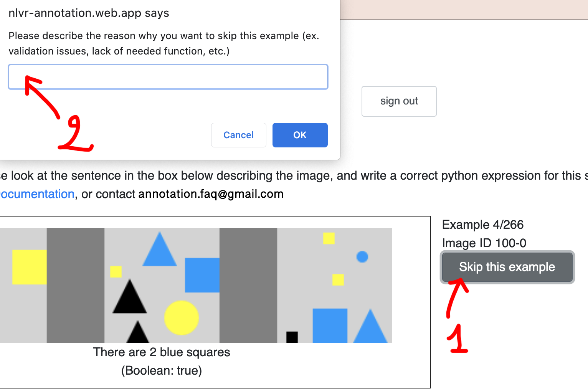

Tutorial
This tutorial shows an example of annotation and where to find the tools for annotating.
The content of video and text tutorials are the same.
Video tutorial
Text tutorial
1: Log in
Please log in using the credentials. If you do not have the credentials, please reach out to aw588@cornell.edu.
Please allow a few seconds for page redirection.

2: Mode selection
Please choose the "test" mode if it's it's for testing the tool, or for an interview. The "normal" mode is the working mode, and will require appropriate access rights.
Goal of this task: write a correct Python expression expressing the sentence in the box. We will then use the expression to evaluate whether the sentence is true for the image.
There can be different images.
For the image in our example, the resulting boolean should be True, since the box on the right contains 5 yellow items.

3: Write the code
We will write the Python expression, using the functions and methods provided (shown on the left on the page, or on this documentation website).
There are also some data structures and variables provided that you can use.
Note
Attention: please ONLY use the provided functions and methods. If you think the annotation cannot be done with them, or if there is an issue, please click on "Skip this example", and leave your comment. You can also note the Image ID and reach out to aw588@cornell.edu.
Note
Attention: Different expressions can be valid and correct for the sentence. Please opt for SHORTER CODE when possible, since it usually aligns better with the language of the sentence.
Here, we filter over all the boxes and try to find if there's a box with 5 yellow items.
You can click on the blue button "Check syntax" to check if the syntax of your expression is valid.
When you finish writing, please click on the blue button "Validate" to validate your result over the visible image, and a few hidden cases.
The validation results should all be correct. If not, please try to review the code. If you think that there is a bug or issue (with the data, or else), please click on "Skip" and leave your comment.

4: Before submitting
Confidence score: Then, please assign a confidence score to the code you wrote (to which extent this code is faithfully "translating" the sentence in a clear and simple way?).
Any comment?: If you have any comment or thought about this case, please leave your comment in the text box "Comment".
Submit: Then, you can submit. (You cannot if all the cases have not been validated previously!)
(if applicable): Skip an example
If you think the annotation cannot be done with them, or if there is an issue, please click on "Skip this example", and leave your comment. You can also note the Image ID and reach out to aw588@cornell.edu.
